Cube Views
Cube Views are synonymous with the term report. When a customer asks, “Can you put this in a report for me?” they are asking, “Can you build a Cube View?” A Cube View is quite literally the view of data that exists inside the cube, hence the appellation Cube View.
A Cube View is a view of the cube through an x and y axis. The axes, in this case, are better known as the row and column sets, respectively. However, the OneStream Cube View is unique in that it can do math against specific data points and – even better – it can do math against its own rows and columns. If this wasn’t somehow expansive enough, you can apply business rules and other unique logic against your Cube View. To say that the Cube View is the backbone of OneStream reporting would be an understatement.
Cube View knowledge will also be needed if your company has any OneStream forms. Forms are built based on the rows and columns in a Cube View. Forms then can have some specific properties assigned to the Cube View. Then, these forms can be assigned to the Workflow Profile properties.
This unique reporting capability offers so many expansive features that it would be nearly impossible to put them all in one chapter. In this chapter, we will cover an array of topics around easily maintaining your Cube View, Cube View math versus the GetDataCell expression, and finally some common troubleshooting cases. One of the more commonly read sections of this chapter will likely be Cells are Red, Invalid or Blank. May you find this chapter beneficial on your Cube View journey!
Cube Views
Maintaining the Cube View
Cube Views can be easy to maintain unless there is a large, fundamental company shift in reporting strategy. Cube Views can be time-consuming to build, format or validate, but the go-forward of maintenance is typically easy as minimal updates should be required following the initial build.
This section covers tips on making maintenance easier.
Cube Views › Maintaining the Cube View
Cube View Templates
Cube View templates are Cube Views built to allow the rows or columns to be shared to another Cube View. OneStream typically recommends using a row or column template if said row or column will be replicated more than once. Using a row or column template is a very simple process. Create a standard Cube View using either the rows or columns (or both) with the desired intersection. Then, apply those to another empty Cube View.
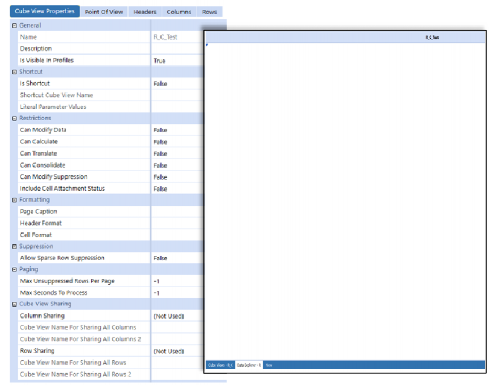
Figure 11.1
Figure 11.1 shows the created Cube View with no rows or columns assigned. Once we assign either a row or column template for sharing, then those specific sections will be greyed out on the inheriting Cube View.
Figure 11.2 shows the assignment of the row and column templates. Although it’s not recommended to override any of the templates, if the row or columns ever needed to be altered, the row or column override section of a Cube View would still be available to change the specific row or column as necessary.
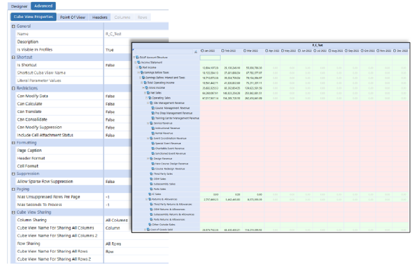
Figure 11.2
| Note: If someone were to render just the row or column template independently, no data would be rendered. Applying the row and column templates together allows the inheriting Cube View to retrieve those intersections together and render the data properly. |
We sometimes see the misuse of row or column templates. For instance, you wouldn’t necessarily need to create a row or column template for every possible Cube View. Some Cube Views are unique or specific to a report and it wouldn’t make sense to create a row or column template. Cash flow matrix or proof is one example of this type of report that wouldn’t necessarily need a row or column template.
Some examples of the most common templates to build for a column set are time templates and scenario templates (Figure 11.3). The most common row sets are specific accounts for either balance sheets or income statements in a tree format (Figure 11.4). However, there is no limitation on row or column usage for templates.
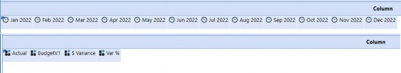
Figure 11.3
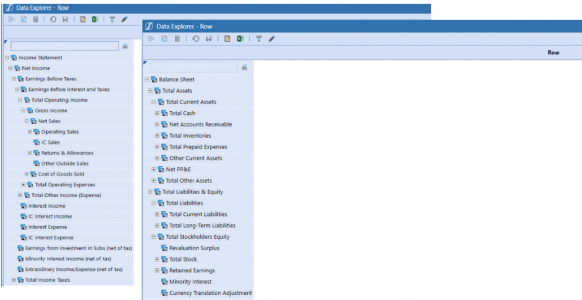
Figure 11.4
One of the great benefits of using row and column templates is that if you update the template, it will be applied to all the Cube Views that use that template. This makes any change to an organization’s reporting structure easy for an administrator; they can update all the impacted Cube Views by modifying just one (or many) template(s).
| Note: Should an administrator find the need to impact only a specific column or row within the template, they could simply use Copy Cube View functionality and create a new template that applies to just that Cube View. Another option would be to use the column or row override. Although using column or row overrides on the column or row template diminishes their value, we recognize that there could be one-off scenarios where this solution is needed. |
Cube Views › Maintaining the Cube View
Parameters
Parameters can make a Cube View very dynamic and allow one report to become multiple reports. Parameters also offer the ability to standardize report formatting or easily pass in information through a linked Cube View.
An example of a formatting parameter might see a company opt only to use one decimal in a percentage, then – a year later – change its mind to display two decimals. Instead of an administrator updating hundreds of reports, they would only need to update the one parameter to accommodate this change. This section should help identify the use of parameters in a Cube View in the most common ways – standardizing the report building process during the implementation of OneStream. This section will not cover what each type of parameter does, as this is extensively covered in the OneStream Reference Guide.
Cube Views › Maintaining the Cube View › Parameters
Format Parameters
OneStream recommends finding a common format that all departments can agree upon and placing it into a parameter. To accomplish this feat, the Report Designer can simply set all the requested format(s) for the Cube View, and then copy and paste it into a literal parameter.
One example of parameter formatting is setting the cell or header format within a Cube View (Figure 11.5).
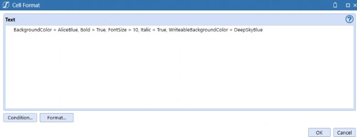
Figure 11.5
Copy this cell format from a Cube View into a parameter with the type set to Literal Value to standardize the formatting of any Cube View.
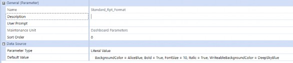
Figure 11.6
Note: Nomenclature is important when locating this parameter and understanding how it is used for your future Cube Views. Usually, it would be a delineation between the cell format and the header format. As an example, the company could use Standard_Cell_Format or Standard_Header_Format. |
This formatting parameter is then pasted into the cell or header formatting using the standard Parameter call |!Parameter Name!| on the Cube View Properties tab. A company might think they are bound to this report formatting forever, and unable to change it, but this is far from the truth. By pasting this parameter to the Cube View Properties tab, the report creator can still overwrite the specific row or column with different formatting.
Note: An important thing to remember – when determining when and where to place the parameter – is the order of precedence for Cube Views. This applies to data interaction on a Cube View as well.
The numbers should make this easier to remember. A higher number means it will win the formatting or intersection. |
Cube Views › Maintaining the Cube View › Parameters
Member Selection Parameters
Cube Views can also have selectable parameters. OneStream has the ability to alter a POV in the Cube View POV section or applied in the member expansion section of the Cube View. This applies to both the row and column member expansion section. These types of parameters are typically either member lists or delimited lists. These are not the only types of parameters that can appear in these sections, just the two most common types.
These parameters are used to further the cause of making Cube Views dynamic. A common use case for this type of parameter is to have actuals in the first column alongside (in the second column) the ability to select a scenario for some type of comparison.
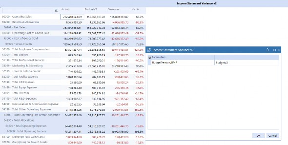
Figure 11.7
The setup for this particular parameter usage is easy to accomplish; have the parameter in the column to be selected.
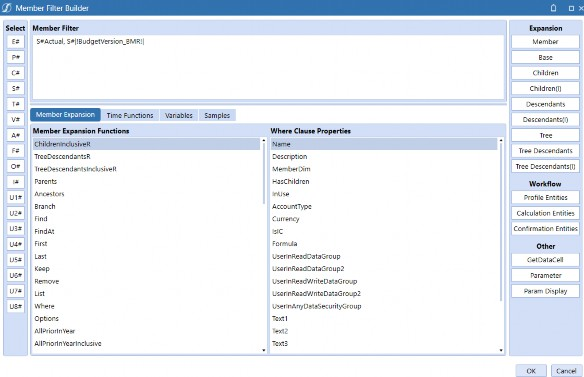
Figure 11.8
This same concept for parameters can be used throughout the Cube View build in both rows and columns, as well as the Cube View POV. This type of parameter concept makes the company Cube View build dynamic and easy to use, as well as providing a great end-user experience.
Cube Views › Maintaining the Cube View › Parameters
Member Filter Substitution Variables
Member variables are commonly used, predefined parameters that are stored to be used in the Member Filter Builder. These are used in a variety of ways, and one common use case might be to plug a substitution variable like|POVUD1| into the intersection on the report. This allows end-users to utilize the report based on their own POV selection, eliminating the need to create several custom parameters. This also makes the report completely dynamic in this aspect. The OneStream Reference Guide does an excellent job of detailing each of these variables and the where and when of their use in a Cube View.
Cube Views
GetDataCell or Cube View Math
The header of this section could possibly be misleading as both the GetDataCell expression and Cube View math start with the nomenclature of GetDataCell. The reference to GetDataCell is typically some type of math function using a dimension (Example: GetDataCell(A#10000 - A#20000)). Cube View math is meant to be some type of either row math or column math, performing the same math functions but using row or column names instead of members. An example of this type of math is GetDataCell(CVR(Row1) – CVR(Row2)).
When using a GetDataCell expression either for the dimensional tagged math or Cube View math, the existing Cube View must render in cache, and then the GetDataCell expression is triggered to perform the math functions.
Cube Views › GetDataCell or Cube View Math
Use Cases
Imagine a company report that uses derived numbers, which are not stored accounts, and where the company does not want to have the values calculated or stored within the system. The requirement is to perform a math function off these accounts, and build some type of check column. For example, a use case for using Cube View math would be where you need to cherry pick accounts in a hierarchy, but the customer doesn’t want to create an alternate hierarchy. As an example, let’s say you have the following hierarchy of cash accounts:
10000 – Total Cash
10010 – Cash California 10020 – Cash Texas 10030 – Cash Canada 10040 – Cash Florida
Perhaps you do not want to alter the structure of Total Cash but you want to report out both US-based cash and total cash. To accomplish this feat, you could create a row with Cube View Math of GetDataCell(A#10010 + A#10020 + A#10040). This would eliminate the need for an alternate hierarchy but still satisfy the reporting requirement.
Cube Views › GetDataCell or Cube View Math
Row/Column Override Considerations
A column or row override simply overrides a specific row, column, or intersection on a Cube View that already has an applied value. Member Filters in overrides must be used consistently in Cube Views. As an example, if you have a column name Col1 with a Member Filter of A#10000, then the override in the row referencing Col1 should use a query for the Member Filter (e.g., A#AR).
This will allow the column or row with the original value to be overwritten with the new updated value.
Likewise, if a column name Col1 uses a GetDataCell for the Member Filter, then the override in the row referencing Col1 should also use a Member Filter of GetDataCell. If Col1 uses a Member Filter of A#10000, but you have a row override of GetDataCell(A#10000 + A#10001), then the amount will not appear to be overwritten. This is another example of being consistent with the row or column overrides. If you have a GetDataCell in a specific row or column, you must use the same GetDataCell syntax in the override as well.
If an administrator is attempting to use a list in a row or column override, this will cause an issue with the override. The override will ignore the other members and only apply to the first member. As an example, in Figure 11.9, only the member of T#2021 will be applied to the override. The other T# members will be ignored.
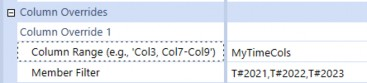
Figure 11.9
If a list is needed or multiple members need to be applied to the Cube View, the administrator may want to consider using a UD8 member. If that isn’t an option, then the Cube View may need to be restricted in a way to accommodate the required listing.
Cube Views
XFBR vs UD8
An XFBR (Extensible Finance Business Rule) is a OneStream business rule that allows for the ability to pass along data types of string in the programming languages of either VB.NET or C# throughout specific sections of the application. Those sections are through dashboard parameters, Cube Views, and alternate business rules.
Most commonly, OneStream will use XFBRs for specific formatting purposes on a Cube View. However, that is not the only reason to use an XFBR. XFBRs can return specific intersections based on clearly defined criteria. As an example, should you need to change an intersection based on scenario, an XFBR can accomplish this feat.
OneStream typically recommends using the UD8 dimension as some type of reporting dimension. This allows for the ability to create dynamic calculations to replace common Cube View math functions. One common example is variance analysis from current year to prior year. One of the key benefits of using a UD8 member is the ability to create a custom drill down. This will allow end-users to see how the number is derived in the dynamic calculation.
Cube Views
Troubleshooting
Troubleshooting is a common topic of conversation throughout the lifecycle of any project and even following implementation. Troubleshooting issues will be a recurring theme no matter how mature the application is. This section isn’t intended to be a catch-all for every possible problem or scenario that could arise with your Cube Views; however, it is intended to look at the common problems that have been found alongside common solutions. Are these the only problems that can be found with Cube Views? No. Are these the only solutions to the problems listed below? No.
OneStream is so robust that there could be so many solutions that it would be difficult to list them all!
OneStream is an expansive platform that offers many different features and functionalities. However, most problems tend to be very customer-centric and often unable to be 100% troubleshot. These nuanced cases can take a great amount of time to find and fix issues. The cases listed below are intended to be helpful pointers on where to start troubleshooting if you are facing similar issues.
This section is mainly meant to be Cube View-related, however Cube Views and dashboards play a hand-in-hand role. Therefore, we have listed a few troubleshooting cases that are synonymous with Cube View issues in dashboards, but which could apply to a lot of dashboard issues.
Cube Views › Troubleshooting
What Happens If I Want to Change My Cube View Name?
Typically, name changes will have a minimal impact within OneStream other than a name update. However, if you have a Cube View attached to a dashboard (Cube View component) – and the name changes – the Cube View component will not automatically update to the new name, and the dashboard will render as an invalid name.
To correct this function, update the name in the dashboard Cube View component to the newly updated name. All other name changes regarding Cube Views will automatically update, and the end-user will experience minimal disruption.
Cube Views › Troubleshooting
A Dashboard No Longer Renders or Errors Appear While Using a Cube View
This will occur when a Cube View is either deleted or renamed. To correct this, validate that the Cube View exists and correct the name within the Cube View dashboard component.
Cube Views › Troubleshooting
Dashboard Migration
This section isn’t specific to Cube Views or the dashboard Cube View component, but it is worth mentioning as a troubleshooting exercise. When migrating dashboard components, you must take all the components that exist in any given maintenance unit. If the migration fails to have every component and a dashboard is migrated, it will drop all the components not brought over from the existing dashboard. This isn’t typically a problem for a new dashboard, but a bigger problem for existing dashboards.
In the example below, there is a basic dashboard setup with two components in a Cube View and a button. The scope has changed for this dashboard, and now the company wants to add a combo box. It’s a simple update to add the new component.
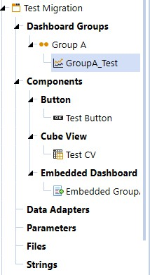
Figure 11.10
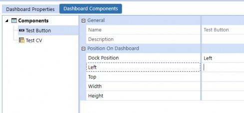
Figure 11.11
When the administrator just adds the combo box and doesn’t bring all the components over, it will remove the button and Cube View.
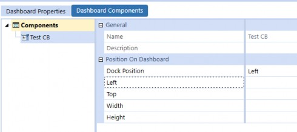
Figure 11.12
| Note: Figure 11.12 shows what the dashboard looks like after migrating just the combo box and not all the dashboard components at one time. |
This is an important piece of information when you are migrating dashboard components between environments. It’s the common reason a dashboard fails when you migrate between development, QA, and production environments. To help mitigate this risk, ensure that you are only keeping necessary dashboard components in your desired dashboard maintenance unit and then select the full maintenance unit to migrate, rather than attempting to select individual components.
Cube Views › Troubleshooting
Why Can I Scroll on My Cube View but Not When It’s in a Dashboard?
This is a common dashboard or Cube View problem with first-time build components. The problem here typically tends to be that someone added a Cube View that worked with no issues and now the scope has changed, or additional components were added to the dashboard, and someone is unable to scroll on the report or Cube View.
When you first start building the dashboard, you just add the Cube View component and it is usually set to uniform. This will allow the Cube View on the dashboard to scroll without issue. However, if you start layering additional components into the dashboard and adjust sizes or hard code pixels, this is when you typically see a Cube View that is unable to scroll.
It is recommended to go back to the initial dashboard – where the Cube View component is attached – and run just that dashboard first. If you can scroll, then you keep moving along all the dashboards until you find the dashboard where the Cube View is unable to be scrolled or paged.
One of the main things to look out for is a grid layout in the Layout Type setting for the dashboard. Then, you need to look for hard-coded values for pixels. If possible, try using either the * (“Star”) or Auto setting for the height or width of any row or column.
Cube Views › Troubleshooting
Cells are Red, Invalid or Blank
If you have skipped ahead, welcome to the party of Cube View building and troubleshooting. When it comes to troubleshooting Cube Views, the most common issue encountered is invalid data cells, indicated by red cells. The first thing a user should always check, in this case, is the Point of View in the data cells. This can be done by right-clicking on any cell in the Cube View and opening Cell POV Information.
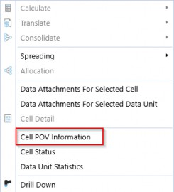
Figure 11.13
A red/invalid cell can be the product of either of the following two issues:
One of the dimensions is not defined. We would identify this courtesy of a question mark next to one of the dimensions in the cell POV window. To fix this, we want to go back into the Cube View editor, go to our Point of View tab, and ensure all dimensions are defined here or in the Rows and Columns tab.
| Note: There may be a question mark next to the ‘parent’ dimension. This is okay depending on what you are trying to query. For example, if you are looking at a particular consolidation audit trail, you may need to define the Parent. |
If no dimensions have question marks next to them (or only the parent dimension has a question mark), then the issue is an invalid intersection.
In some cases, with Cube Views, there may be a mix of valid and invalid cells. This is usually okay; it just means we need to turn on our suppression setting to suppress invalid cells in order to only show valid cells on the report.
When a Cube View comes up blank with no cells that are either valid or invalid, it typically means there are suppression settings on that are not displaying invalid cells, or NoData cells that would normally be displaying. Turn off the suppression settings one by one to determine what kind of cells they are, and solve the problem appropriately by either changing the dimensions or by referring to the section above. Also, you may accidentally be running a report that only has columns or rows defined (such as a template). Check to make sure you are running the correct report.
Depending on how the Cube View is built, there is a chance that not all dimensions are defined in the rows/columns/cube POV. Any dimensions not referenced explicitly in the Cube View will default to the user’s POV, and there is a chance that the user’s POV is not set up (missing dimensions will be denoted with ?).
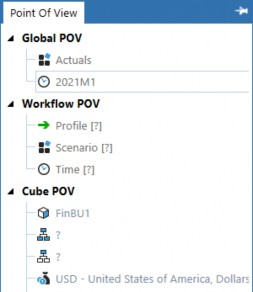
Figure 11.14
Cube Views › Troubleshooting
Why Does My Cube View Take a Long Time to Render?
When a Cube View takes a long time to run, it is typically a sign that the system is generating a lot of data or that a Level 1 Data Unit has been assigned to a row. This may be encountered when we have multiple dimensions nested, as demonstrated below.
| Note: The Level 1 Data Unit consists of the Cube, Entity, Parent, Consolidation, Scenario, and Time dimensions. |
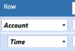
Figure 11.15
Figure 11.15 would show each account at each time period. This is purely hypothetical, but you can see how a situation like this would exponentially multiply the amount of data being generated. If any reports need multiple nested dimensions, like this, it’s important to make sure we are doing two things:
Turning on all row/column suppression, including spare row suppression. We don’t want the system to generate any more rows/columns than it needs to.
Avoiding calling all members in the dimension. By this, we mean making sure not to call all members from the ‘top’ level (e.g.,
U1#Top.Tree).
If a Cube View has all row/column suppression settings turned on, and it is calling all necessary levels of data and still taking a long time to render, it may be that there is a Level 1 Data Unit in the rows or that other processes are running in the system in the background that are slowing things down momentarily. If that isn’t the case, our final option would be to restructure the report.
Cube Views › Troubleshooting
Should I Put My Entities in the Row Set?
Can you put your entities in your Cube View row set? Yes, you can. The real question that is being asked is, should you? No, you shouldn’t put entities in the row set.
One entity in the row set is really no issue. However, if the organization has several entities, then this could cause a significant performance problem as each entity is now attempting to pull a new Data Unit for every reporting line with the entity. By building this type of report, an administrator could potentially hold the entire application RAM in-memory for the one report. If this does happen, clear the server IIS and remove the entities from the report.
Cube Views › Troubleshooting
Cube View Data Says No Access
When the end-user’s Cube View renders with “No Access” in the cells, this is a sign that they have restricted access to view the data being displayed in the Cube View. If they should have access, then it means the security settings need to be re-evaluated (see Chapter 12 – Securing the Pieces). If they should not be allowed to see the data, then this is working as intended.
Cube Views › Troubleshooting
Cube View Says #Error or The Data Is Completely Wrong
A calculated row/column is one that is doing math on-the-fly, such as GetDataCells. When doing GetDataCell calculations in rows or columns, a GetDataCell row must not intersect a GetDataCell column. The system does not have an order of operations when it encounters two GetDataCells and will either show #Error in the cell, or it will simply do the wrong math (e.g., 1 + 2 = 5).
To solve this issue and avoid it in the future, create a new member in a dimension for the impacted dimension that is being calculated in OneStream. This prevents doing the math on the Cube View.
Cube Views
Tips and Tricks
Whether you’re a seasoned administrator or new to OneStream, everyone loves some helpful tips and tricks to support any report building. This section will cover some common tips and tricks that support building and maintaining Cube Views.
Cube Views › Tips and Tricks
How Can I Use the Same Point of View (POV) for Multiple Cube Views?
An administrator can copy a specific Cube View POV and paste it into another Cube View. On the Cube View Point Of View tab, the administrator can right-click on a specific section (see Figure 11.16) and select copy and then paste (Figure 11.17).
If you right-click on the section that is not highlighted in red, the administrator will receive the option to cut, copy, or paste. These options do not pertain to the POV but the text in the specific row.
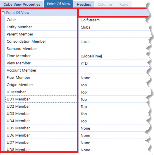
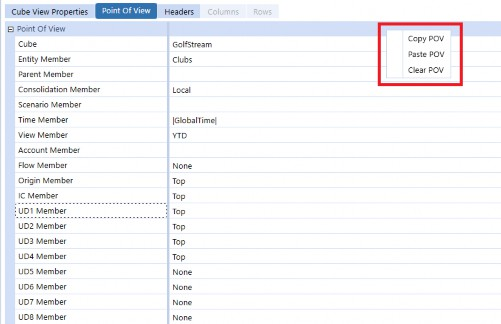
Figure 11.16
Figure 11.17
Cube Views › Tips and Tricks
Who Can or Should Build New Cube Views?
The answer here might surprise some people. In other systems, the answer would be that building is limited to special access for administrators. However, with OneStream’s custom security model builds, literally anyone can build a Cube View if there is a desire for that to be the case. Indeed, the customer may determine it’s best for a group of end-users to build reports and lighten the administrative burden. For further explanation on how to achieve this feat, see Chapter 12: Securing the Pieces.
Cube Views › Tips and Tricks
How Do I Email a Report to Someone That Doesn’t Have OneStream?
This answer here is intuitive for some administrators; however, this question has been asked enough that we decided to include it in the book! An end-user can simply export the report using the Show Report or Export to Excel buttons (Figure 11.18). The end-user can then save the report and simply email it.
Figure 11.18
OneStream also offers the Parcel Service Marketplace Solution, which allows for the ability to set up report packages and email them to customizable distribution groups of users that may or may not have OneStream access. For additional information regarding the Parcel Service Marketplace Solution, see the installation instructions and guides.
Cube Views
Conclusion
All setup, configuration, and data imports lead to the point of reporting. Every OneStream end-user wants the data to be correct and as expected. Will you encounter issues outside of this chapter?
Probably. But this chapter hopefully provides a thoughtful view of how troubleshooting reporting/Cube View builds can help the administrator in the future.
We have addressed the most common problems asked by customers and administrators, and as mentioned, this isn’t intended to be a definitive list of problems with the Cube View or data inside the Cube View. However, this chapter should guide the administrator into thinking about troubleshooting differently… facilitating the path to a clean report.
If you need additional or more detailed information, take a look at the OneStream Advanced Reporting and Dashboards book.